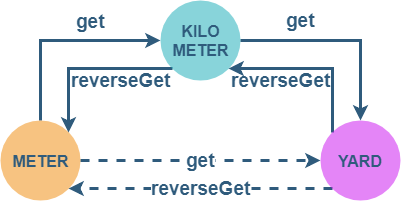

JS ==> FP
Недалекое настоящее
- DOMа больше нет
- React не оптимизирует рендеринг
- Данные мутируют
#1
["qwe", "asd", "zxc"].map((word) => word
.toUpperCase()
.split("")
.slice(0, 2)
.join("|")
); // ["Q|W", "A|S", "Z|X"]
#2
function takeUpperFirstTwoCharacters(words) {
return _.map(words, word => {
return _.take(_.toUpper(word), 2).join("|")
});
}
takeUpperFirstTwoCharacters(["qwe","asd","zxc"]);
// ["Q|W", "A|S", "Z|X"]
#3
const LIBRARY = {
take: (n, data) => _.take(data, n),
map: (fn, data) => _.map(data, fn),
join: (separator, data) => data.join(separator)
};
function takeUpperFirstTwoCharacters(words) {
return LIBRARY.map(word => {
return LIBRARY.join("|",
LIBRARY.take(
_.toUpper(word)
, 2)
);
}, words);
}
takeUpperFirstTwoCharacters(["qwe","asd","zxc"]);
Currying
Currying
const curryN = (left, fn) =>
left <= 0
? fn()
: (...args) =>
curryN(left - args.length, fn.bind(undefined, ...args));
const curry = fn => curryN(fn.length, fn);
const maxOf = (...x) => Math.max(...x);
let maxOfPair = curryN(2, maxOf);
console.log(maxOfPair(1, 2)); // 2
let sum = curry((a, b, c) => a + b + c);
console.log(sum(1, 2, 3)); // [1, 2, 3]
console.log(sum(1)(2, 3)); // [1, 2, 3]
console.log(sum(1, 2)(3)); // [1, 2, 3]
Currying with placeholder
let abc = _.curry((a, b, c) => [a, b, c]);
abc(1, 2, 3); // [1, 2, 3]
abc(R.__, 2, 3)(1); // [1, 2, 3]
abc(R.__, R.__, 3)(1)(2); // [1, 2, 3]
abc(R.__, R.__, 3)(1, 2); // [1, 2, 3]
abc(R.__, 2, R.__)(1, 3); // [1, 2, 3]
abc(R.__, 2)(1)(3); // [1, 2, 3]
abc(R.__, 2)(1, 3); // [1, 2, 3]
abc(R.__, 2)(R.__, 3)(1); // [1, 2, 3]
#4
const LIBRARY = {
take: _.curry((n, data) => _.take(data, n)),
map: _.curry((fn, data) => _.map(data, fn)),
join: _.curry((separator, data) => data.join(separator)),
tap: _.curry((fn, data) => fn(data) || data)
};
const joinPipe = LIBRARY.join("|");
const take2 = LIBRARY.take(2);
function takeUpperFirstTwoCharacters(words) {
return LIBRARY.map(word => {
return joinPipe(take2(_.toUpper(words))));
}, words);
}
takeUpperFirstTwoCharacters(["qwe","asd","zxc"]);
Композиция
функций
Композиция
функций
const pass = fn => data => fn(data) || data;
const conveyor = (...fns) =>
data => fns.reduce(
(lastResult, currentFn) => currentFn(lastResult),
data
);
conveyor(
pass(console.log), // 3
(x) => x + 1,
pass(console.log), //4
)(3); // 4
#5
const LIBRARY = {
take: _.curry((n, data) => _.take(data, n)),
map: _.curry((fn, data) => _.map(data, fn)),
join: _.curry((separator, data) => data.join(separator)),
tap: _.curry((fn, data) => fn(data) || data)
};
const joinPipe = LIBRARY.join("|");
const take2 = LIBRARY.take(2);
let takeUpperFirstTwoCharacters = LIBRARY.map(_.flow([
_.toUpper,
take2,
joinPipe
]));
takeUpperFirstTwoCharacters(["qwe","asd","zxc"]);
Pure functions
Pure functions
- Во время выполнения функции не возникают ВИДИМЫЕ побочные эффекты.
- Функция, вызываемая от одних и тех же аргументов, всегда возвращает одинаковое значение.
let count = 0;
const factorial = R.memoizeWith(R.identity, n => {
count += 1;
return R.product(R.range(1, n + 1));
});
factorial(5); //=> 120
factorial(5); //=> 120
factorial(5); //=> 120
count; //=> 1
Side effects
Итого
Итого
- Лексическое замыкание
- Функции первого класса и функции высшего порядка
- Каррирование
- Function first - data last function API
- Композиция
- Чистые функции
- No side effects
- State less Immutability Ленивость
Ramda
Ramda
- Immutability and side-effect free functions are at the heart of its design philosophy
- Ramda functions are automatically curried
- The data to be operated on is generally supplied last.
#6
let takeUpperFirstTwoCharacters = map(pipe(
toUpper,
take(2),
join("|")
));
Fibonacci
// Ramda.js cond
// F(<1) = 0;
// F(1) = 1;
// F(n) = F(n-1) + F(n-2);
const fib = n => call(cond([
[lte(__, 0), always(0)], // if
[equals(1), always(1)], // else if
[T, converge(add, [ // else
pipe(dec, fib),
pipe(subtract(__, 2), fib)
])]
]), n);
fib(7);
// F# pattern matching
// F(<1) = 0;
// F(1) = 1;
// F(n) = F(n-1) + F(n-2);
let rec fib n =
match n with
| 0 -> 0
| 1 -> 1
| _ -> fib (n - 1) + fib (n - 2)
printfn "Fibonacci %d: %d" 7 (fib 7)
Optics
ISO
ISO
class Iso<From, To> {
constructor(
readonly get : (from: From) => To,
readonly reverseGet: (to: To) => From,
) { }
reverse(): Iso<To, From> {
return new Iso(this.reverseGet, this.get);
}
modify(xfn: (to: To) => To): (from: From) => From {
return from => this.reverseGet(xfn(this.get(from)));
}
compose(iso: Iso<To, Next>): Iso<From, Next> {
return new Iso(
(from: From) => iso.get(this.get(from)),
(next: Next) => this.reverseGet(iso.reverseGet(next)),
);
}
}
class M { constructor(public readonly _m: number) {} }
class Y { constructor(public readonly _y: number) {}
inc() { return new Y(this._y + 1); } }
class KM { constructor(public readonly _km: number) {}}
const m_km = new Iso<M, KM>(
m => new KM(m._m / 1000), // get
km => new M(km._km * 1000), // reverseGet
)
const m_y = new Iso<M, Y>(
m => new Y(m._m * 1.09361), // get
y => new M(y._y / 1.09361), // reverseGet
)
const km_y = m_km.reverse()/* km_m */.compose(m_y);
const meters = new M(1234);
const kMeters = m_km.get(meters); // M -> KM = 1.234 km
console.log(m_km.reverseGet(kMeters)); // M -> KM -> M = 1234 m
// KM -> Y -(xfn)-> Y -> KM = 1.234914402757839 km
console.log(km_y.modify(y => y.inc())(kMeters));
ISO

Prism
class Prism<From, To> {
constructor(
readonly getMaybe : (from: From) => Maybe<To>,
readonly reverseGet: (to: To) => From,
) { }
set(to: To): (from: From) => From {
return this.modify(_ => to); // K(x) === x => _ => x
}
isMatching(from: From): boolean {
return this.getMaybe(from).isJust;
}
modify(xfn: (to: To) => To): (from: From) => From {
return from => this.modifyMaybe(xfn)(from)
.getOrElse(from);
}
modifyMaybe(xfn: (to: To) => To): (from: From) => Maybe<From> {
return from => this.getMaybe(from)
.map(to => this.reverseGet(xfn(to)));
}
compose(prism: Prism<To, Next>): Prism<From, Next> {
return new Prism( // Maybe<To> -> Maybe<Next>
(from: From) => this.getMaybe(from)
.chain(to => prism.getMaybe(to)),
(next: Next) => this.reverseGet(prism.reverseGet(next)),
);
}
}
Lenses
Lenses
export class Lens<From, To> {
constructor(
readonly get: (from: From) => To,
readonly set: (to: To) => (from: From) => From
) {}
modify(xfn: (to: To) => To): (from: From) => From {
return from => this.set(xfn(this.get(from)))(from);
}
compose<Next>(lens: Lens<To, Next>): Lens<From, Next> {
return new Lens(
from => lens.get(this.get(from)),
next => from => this.set(
lens.set(next)(this.get(from))
)(from)
);
}
}
Lenses
const very = {
deep : { nested: { property: { a:
[1, 2, 3, "change me pls", 4, 5]
} } },
heads: { nested: 2 }
};
let xLens = R.lens(
R.path(["deep", "nested", "property", "a", 3]),
R.assocPath(["deep", "nested", "property", "a", 3])
);
xLens = R.compose(
R.lensPath(["deep", "nested", "property"]),
R.lensPath(["a", 3])
);
R.view(xLens, very); // => "change me pls"
R.set(xLens, "horay", very);
R.over(xLens, R.toUpper, very);
Lenses


const xLens =
R.lensPath(['c1', 'b1', 'a']);
const a = { a: "a" };
const b = { b1: a, b2: a };
const c = { c1: b, c2: b };
const cNew = R.set(xLens, 1, c);
cNew === c; // false
cNew.c1 === b; // false
cNew.c1.b1 === b.b1; // false
cNew.c1.b2 === b.b2; // true
cNew.c2 === b; // true
cNew.c2.b1 === b.b1; // true
cNew.c2.b2 === b.b2; // true
Optional
Optional
class Optional<From, To> {
constructor(
readonly getMaybe : (from: From) => Maybe<To>,
readonly set : (to : To) => (from: From) => From
) { }
modify(xfn: (to: To) => To): (from: From) => From {
return from => this.modifyMaybe(xfn)(from)
.getOrElse(from);
}
modifyMaybe(xfn: (to: To) => To): (from: From) => Maybe<From> {
return from => this.getMaybe(from).map(
to => this.set(xfn(to))(from)
);
}
compose(optional: Optional<To, Next>): Optional<From, Next> {
return new Optional( // Maybe<To> -> Maybe<Next>
from => this.getMaybe(from)
.chain(to => optional.getMaybe(to)),
next => from => this.set(
optional.set(next)(this.get(from))
)(from)
);
}
}
Optics
hierarchy
Optics hierarchy
Optics composition
| Optional | Prism | Lens | Iso | |
|---|---|---|---|---|
| Optional | Optional | Optional | Optional | Optional |
| Prism | Optional | Prism | Optional | Prism |
| Lens | Optional | Optional | Lens | Lens |
| Iso | Optional | Prism | Lens | Iso |
Summary
- Immutability
- Structural sharing
- Composability
Transducers
Проблемы наивной трансформации
[2, 3, 4, 5, 6, 7, 8, 9, 10]
.filter(x => x > 5) // [6, 7, 8, 9, 10]
.map(x => x + 1) // [7, 8, 9, 10, 11]
.find((i => { let count = 0;
return x => (x % 2 === 0) && (++count === i);
})(2)); // 10
const map = xfn => (acc, cur) => {
acc.push(xfn(cur));
return acc;
};
const filter = predicate => (acc, cur) => {
predicate(cur)) {
acc.push(cur);
}
return acc;
};
const countedFind = (count, predicate) => {
let i = 0;
return (acc, cur) => {
if (predicate(cur) && ++i === count) {
acc.push(cur);
}
return acc;
};
};
[2, 3, 4, 5, 6, 7, 8, 9, 10]
.reduce(filter(x => x > 5), []) // [6, 7, 8, 9, 10]
.reduce(map(x => x + 1), []) // [7, 8, 9, 10, 11]
.reduce(countedFind(2, x => x % 2 === 0), []); // [10]
const map = xfn => reducer =>
(acc, cur) => reducer(acc, xfn(cur));
const filter = predicate => reducer =>
(acc, cur) => predicate(cur) ? reducer(acc, cur) : acc;
const countedFilter = (count, predicate) => reducer => {
let i = 0;
return (acc, cur) => filter(() => predicate(cur) && ++i === count)
(reducer)(acc, cur)
};
const arrayReducer = (arrayAcc, cur) => arrayAcc.push(cur) && arrayAcc;
[2, 3, 4, 5, 6, 7, 8, 9, 10]
.reduce(filter(x => x > 5)(arrayReducer), []) // [6, 7, 8, 9, 10]
.reduce(map(x => x + 1)(arrayReducer), []) // [7, 8, 9, 10, 11]
.reduce(countedFilter(2, x => x % 2 === 0)(arrayReducer), []); // [10]
map(+1) ::
typeReducer => (acc, cur) => typeReducer(acc, cur + 1)
'-------------------------------------'
logic reducer
filter(>5) ::
typeReducer => (acc, cur) => (cur > 5) ? typeReducer(acc, cur) : acc
'---------------------------------------------------'
logic reducer
filter(>5)(arrayReducer) :: filteringArrayReducer - logic reducer
(acc, cur) => (cur > 5) ? arrayReduce(acc, cur) : acc
map(+1)(filteringArrayReducer) :: map(+1)(filter(>5)(arrayReducer))
(acc, cur) => filteringArrayReducer(acc, cur + 1)
incrementFilteringArrayReducer ::
compose(map(+1), filter(>5))(arrayReducer)
const arrayReducer = (arrayAcc, cur) =>
arrayAcc.push(cur) && arrayAcc;
[2, 3, 4, 5, 6, 7, 8, 9, 10]
.reduce(
filter(x => x > 5)(
map(x => x + 1)(
countedFilter(2, x => x % 2 === 0)
(arrayReducer))),
[]
); // [10]
[2, 3, 4, 5, 6, 7, 8, 9, 10]
.reduce(compose(
filter(x => x > 5),
map(x => x + 1),
countedFilter(2, x => x % 2 === 0)
)(arrayReducer),
[]
); // [10]
)
const arrayReducer = (arrayAcc, cur) =>
arrayAcc.push(cur) && arrayAcc;
const transduce = (xfn, accReducer, acc, data) =>
data.reduce(xfn(accReducer), acc);
transduce(
compose(
filter(x => x > 5),
map(x => x + 1),
countedFilter(2, x => x % 2 === 0)
),
arrayReducer,
[],
[2, 3, 4, 5, 6, 7, 8, 9, 10]
)
Ramda
var numbers = [2, 3, 4, 5, 6, 7, 8, 9, 10];
var transducer = R.compose(
R.filter(R.lt(5)),
R.map(R.add(1)),
R.filter(x => x % 2 === 0)
);
R.tail(
R.transduce(transducer, R.flip(R.append), [], numbers) // [8, 10]
); // [10]
Transducers Protocol
Demo time
Identity
Identity
class Identity {
constructor(value) {
this._value = value;
}
static of(val) {
// Identity.of(a) fp-way for new Identity(a)
return new Identity(val);
}
map(fn) {
// Применяет функцию на значение, возвращает тот же тип Identity
return Identity.of(this.chain(fn));
}
chain(fn) {
// Применяет функцию которая возвращает Identity на значение
return fn(this._value);
}
ap(someOtherMonad) {
// Принимает другую монаду со значением-функцией
return someOtherMonad.map(this._value);
}
}
Контекст и данные
const chain = R.invoker(1, "chain");
const map = R.invoker(1, "map");
const m2 = Identity.of(2);
const mInc = Identity.of(x => x + 1);
const mDecremented = R.pipe(R.dec, Identity.of);
mInc // Identity(+1)
.ap(m2) // Identity(3)
.chain(mDecremented); // Identity(2)
m2
.chain(mDecremented) // Identity(1)
.chain(mDecremented) // Identity(0)
.chain(mDecremented) // Identity(-1)
.map(x => x*100); // Identity(-100)
R.pipe(
chain(mDecremented), // Identity(1)
chain(mDecremented), // Identity(0)
chain(mDecremented), // Identity(-1)
map(R.multiply(100) // Identity(-100)
)
Fantasy Land
Fantasy Land

Fantasy Land
var mapping = {
...
map: 'fantasy-land/map', // Functor
of: 'fantasy-land/of', // Applicative
ap: 'fantasy-land/ap', // Apply
chain: 'fantasy-land/chain', // Chain
concat: 'fantasy-land/concat', // Semigroup
empty: 'fantasy-land/empty', // Monoid
...
};
Fantasy Land: Type signature notation
traverse :: Applicative f, Traversable t => t a ~> (TypeRep f, a -> f b) -> f (t b)
'------' '--------------------------' '-' '-------------------' '-----'
' ' ' ' '
' '- type constraints ' '- argument types '- return type
' '
'- method name '- method target type
Maybe
function Maybe(value) { // Maybe a = Just a | Nothing
return value == null ? new Nothing() : new Just(value);
}
class Nothing {
ap() { return this; }
chain() { return this; }
map() { return this; }
getOrElse (x) { return x; }
}
class Just {
constructor(value) { this.__value = value; }
ap(other) { return (other instanceof Just) ?
new Just(this.__value (other.__value)) : other;
}
chain(fn) { return fn(this.__value); }
map(fn) { return new Just(this.chain(fn)); }
getOrElse () { return this.__value; }
}
Maybe(2) // Just(2) || null
.map(R.inc) // Just(3) || Nothing
.getOrElse(8) // 3 || 8
Maybe(R.inc) // Just(+1)
.ap(Maybe(2)) // Just(3) || Nothing
.getOrElse(8) // 3 || 8
Maybe(333).map(R.identity); // 3 * I = 3 - identity => Maybe(333)
Maybe(333).map(R.pipe(R.inc, R.inc)); // composition => Maybe(335)
Maybe(333).map(R.inc).map(R.inc); // 3 * (+1 + +1) = (3 * +1) * +1
const maybePath = R.curry((path, obj) => R.pipe(R.path(path), S.toMaybe)(obj));
R.pipe(
maybePath(["a"]),
R.tap(console.log),
log, // Just({s:{d:"qwe"}}) || Nothing
S.chain(maybePath(["s", "d"])),
log, // Just("qwe") || Nothing
S.map(R.toUpper),
log, // Just("QWE") || Nothing
S.fromMaybe("default"),
R.tap(console.log) // "QWE" || "default"
)({ a: { s: { d: "qwe" } } });
R.pipe(
S.toMaybe,
log, // Just(2) || Nothing
S.chain(R.pipe(
R.inc,
R.always(null), // [un]comment
S.toMaybe
)),
log, // Just(3) || Nothing
S.fromMaybe(777),
log, // 3 || 777
)(2);
Either
Left / Right
const safeDivide = R.curry((a, b) => b === 0 ?
Either.Left(new Error("Divided by zero!")) :
Either.Right(a / b));
const throwedDivide = ([a, b]) => {
if (b === 0) { throw new Error("Divided by zero!"); }
else { return a / b;}
};
R.pipe(
log, // Left (new Error ("Divided by zero!")) || Right (1)
S.chain(safeDivide(R.__, 2)),
log, // Left (new Error ("Divided by zero!")) || Right (0.5)
S.fromEither(222),
log // 222 || 0.5
)(safeDivide(2, 0));
R.pipe(
S.encaseEither(R.prop("message"))(throwedDivide),
log, // Left ("Divided by zero!") || Right (1)
S.chain(safeDivide(R.__, 2)),
log, // Left ("Divided by zero!") || Right (0.5)
S.fromEither(222),
log // 222 || 0.5
)([1, 0])
Writer
Storage
class Store { // Monoid(empty) -> Semigroup(concat)
constructor(value) {
this._store = value === undefined ? [] : [].concat(value);
}
concat(anotherStore) {
if (!(anotherStore instanceof Store)) {
throw new Error("concat :: Store");
}
return Store.of(this._store.concat(anotherStore._store));
}
static of(value) { return new Store(value); }
static empty() { return Store.of(); }
getStore() { return this._store; }
}
Writer
const getWriter = R.curry((Storage) =>
class Writer {
constructor({ value, store }) {
this._store = store;
this._value = value;
}
run() {
return { value: this._value, store: this._store };
}
chain(fn) {
const { value, store } = this.run();
const { value: newValue, store: newStore } = fn(value).run();
return new Writer({ value: newValue, store: store.concat(newStore) });
}
ap(other) { return other.map(this._value); }
map(fn) {
const { value, store } = this.run();
return new Writer({ value: fn(value), store });
}
static storage = Storage;
static of(value) {
return new Writer({ value, store: Storage.empty()});
}
}
);
Writer
const storeWriter = getWriter(Store);
const wAdd = R.curry((x, y) => new storeWriter({
value: x + y,
store: storeWriter.storage.of(`${x} + ${y} = ${x + y}`)
}));
const wMul = R.curry((x, y) => new storeWriter({
value: x * y,
store: storeWriter.storage.of(`${x} * ${y} = ${x * y}`)
}));
const wInc = (x) => new storeWriter({
value: x + 1,
store: storeWriter.storage.of(`${x} was incremented`)
});
console.log( wAdd(1,2) // Writer({value: 3 , store: ["1 + 2 = 3"]})
.chain(wMul(100)) // Writer({value: 300, store: ["1 + 2 = 3", "100 * 3 = 300"]})
.chain(wInc) // Writer({value: 301, store:
// ["1 + 2 = 3", "100 * 3 = 300", "300 was incremented"]})
.run() // {value: 301, store: ["1 + 2 = 3", "100 * 3 = 300", "300 was incremented"]}
);
Future
Future
class Future {
constructor(fork) { this._fork = fork; }
static of(val) { return new Future((res, rej) => res(val)); }
chain(fn) {
return new Future((res, rej) =>
this._fork(
val => fn(val)._fork(res, rej),
err => rej(err) // transit error further
)
);
}
ap(other) {
return new Future((res, rej) => {
other._fork(val => {
this._fork(fn => {
res(fn(val))
})
})
})
}
map(fn) { return this.chain(val => Future.of(fn(val))); }
fork(res, rej) { this._fork(res, rej); }
}
Future
const fRange = Future.of(R.range);
const fInc = Future.of(val => val + 1);
const f2 = Future.of(2);
const logger = [
data => console.info("data: ", data),
err => console.error("err: ", err)
];
const f3 = fInc.ap(f2);
const f10 = Future.of(10);
f10.fork(...logger);
fRange.ap(f2).ap(f10).fork(...logger);
f10.fork(...logger);
f10.map(R.add(3)).fork(...logger);
f10.chain(val => Future.of(val + 100)).fork(...logger);
IO
IO
class IO {
constructor(effect) {
this._effect = effect;
}
static of(x) {
return new IO(_ => x);
}
static from(fn) {
return new IO(fn);
}
ap(otherIO) {
return this.chain(fn => otherIO.map(fn));
}
map(fn) {
return this.chain(a => IO.of(fn(a)));
}
chain(fn) {
return new IO(() =>
fn(this._effect()).run()
);
}
run() {
return this._effect();
}
}
IO
const read = id =>
_ => document.querySelector(`\#${id}`).innerHTML;
const write = id =>
val => document.querySelector(`\#${id}`).innerHTML = val;
const toUpperCase = x => x.toUpperCase();
const changeToStartCase = IO.from(read('student-name'))
.map(toUpperCase)
.map(write('student-name'));
changeToStartCase.run()
Reader
Reader
class Reader {
constructor(effect) {
this._effect = effect;
}
static ask = new Reader(env => env);
static of(x) {
return new Reader(_ => x);
}
ap(otherReader) {
return this.chain(env => otherReader.map(env));
}
map(fn) {
return this.chain(env => Reader.of(fn(env)));
}
chain(fn) {
return new Reader(env => fn(this._effect(env)).run(env));
}
run(env) {
return this._effect(env);
}
}
Reader
const sum = a => b => a + b;
const sumWithEnv = aReader => Reader.ask.map(bEnv => {
return sum(aReader)(bEnv);
});
Reader.of(2)
.chain(sumWithEnv) // 3 2
.chain(sumWithEnv) // 3 5
.run(3); // 8
Reader
const inc = x => x + 1;
const db = { insert(x) {
return { id: 1, value: x };
}};
const save = x => Reader.ask.map(db => db.insert(x));
const create = x =>
Reader.of(x)
.map(inc)
.chain(save)
.map(JSON.stringify);
let asd = create(2).run(db); // {"id":1,"value":3}
State
class State {
constructor(effect) {
this._effect = effect;
}
static of(res) {
return new State(state => ({ res, state }));
}
ap(otherState) {
return this.chain(xfn => otherState.map(xfn));
}
map(xfn) {
return this.chain(res => State.of(xfn(res)));
}
chain(fn) {
return new State(res => {
const {
res: lastRes,
state: lastState
} = this._effect(res);
return fn(lastRes).run(lastState);
});
}
run(state) { return this._effect(state); }
eval(state) { return this._effect(state).res; }
exec(state) { return this._effect(state).state; }
static get = new State(state => ({ res: state, state }));
static modify(xfn) {
return new State(state => ({ res: null, state: xfn(state) }));
}
static put(state) {
return State.modify(_ => state);
}
}
State
const sub = (x, y) => x - y;
const K = x => _ => x;
const res2store = x => State.put(x).map(K(x));
const store2resWith = op => res =>
new State(state => ({ res: op(res, state), state }))
State.of(x => x + 7) // { res: x=>x+7, state: 2 }
.ap(State.of(1)) // { res: 8, state: 2 }
.chain(res2store) // { res: 8, state: 8 }
.map(x => x + 1) // { res: 9, state: 8 }
.chain(store2resWith(sub))
.run(2); // { res: 1, state:8 }
Як
Пустыня
Горное озеро
Болото
Пляж
Буря
Свитки
древних
TC-39: Proposal Pipeline Operator
let result = exclaim(capitalize(doubleSay("hello")));
result // "Hello, hello!"
let result = "hello"
|> doubleSay
|> capitalize
|> exclaim;
result // "Hello, hello!"
TC-39: Proposal Partial Application
const addOne = add(1, ?); // apply from the left
addOne(2); // 3
const addTen = add(?, 10); // apply from the right
addTen(2); // 12
const newScore = player.score
|> _ => add(7, _)
|> _ => clamp(0, 100, _);
let newScore = player.score
|> add(7, ?)
|> clamp(0, 100, ?);
const tmplStr = `'${?}' not found.`;
tmplStr("foo"); // "'foo' not found."
TC-39: Proposal Pattern Matching
const res = await fetch(jsonService)
case (res) {
when {status: 200, headers: {'Cookie': s}} -> {
console.log(`cookie is ${s}`)
}
when {status: 404} -> {
console.log('JSON not found')
}
when {status} if (status >= 400) -> {
throw new RequestError(res)
}
}
TC-39: Proposal Optional Chaining
a?.b[3].c?.(x).d
(a == null)
? undefined
: (a.b[3].c == null)
? undefined
: a.b[3].c(x).d
// (as always, except that `a` and `a.b[3].c`
// are evaluated only once)
TC-39: Proposal Nullish Coalescing
const obj = {
[[und]] : undefined, // + // falsy
noll : null, // + // falsy
nothing : '', // - // falsy
zero : 0, // - // falsy
F : false // - //
};
undef = obj?.und ?? 'default'; // 'default'
noll = obj?.noll ?? 'default'; // 'default'
nothing = obj?.nothing ?? 'default'; // ''
zero = obj?.zero ?? 'default'; // 0
F = obj?.F ?? 'default'; // false
More
More
- AOP in JS
- RXJS
- TS
- Библиотека для NPM
- CLI утилита для Node.js
- DI in JS
- PostCSS plugin
Спасибо за внимание
Sleep
Driving
Understanding
const sleep = () => console.log("Sleep");
const understand = what =>
PrependEach.of(what)
.map(negation)
.map(anger)
.map(bargain)
.map(depression)
.map(adoption);
understand(fpPresentation).through(sleep) === "I understand!";